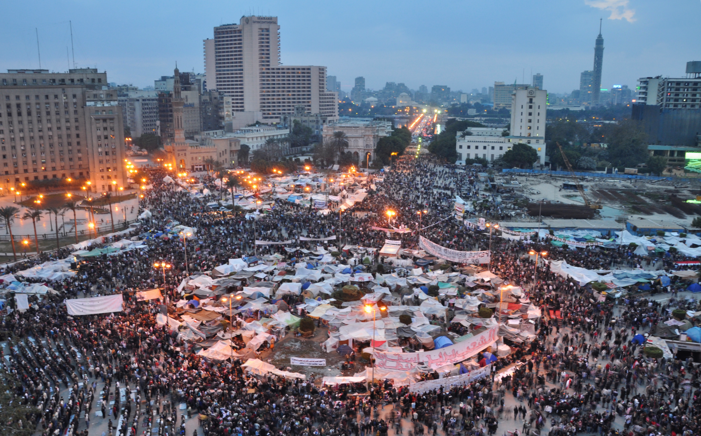
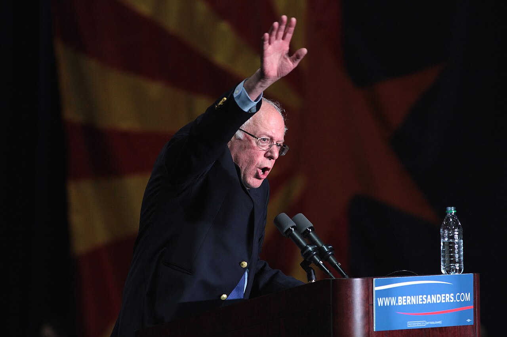

Three movements put enormous numbers in the street. Only one of them could still do anything the following year.
Goal of today
What you'll walk out with
One argument and three tools. The argument: reach is cheap, capacity is expensive, and only capacity survives the week. The tools are three pieces of Project 2, each one answering a specific way a movement we study came apart: an audience chosen by values, an ask somebody is authorized to accept, and indicators that are not follower counts.
Coming up
Week 11 sets up Project 2, and Project 2 is due at the end of Week 12. The three tools we build today are three of its required parts, and you will leave with rough versions of all three.
Next Tuesday: the attention economy, Jodi Dean and Jenny Odell, which is the argument for why circulation is not change.
Debate this
“If you can put a million people in the street in a week, you have basically already won.”
Who is telling us this
Zeynep Tufekci grew up in Turkey and lived through a military coup.
A sociologist who writes about technology and power, and who was physically present at protests she writes about. She's arguing that the tools which make a protest enormous in days are the same reason it can have nothing left a month later. Twitter and Tear Gas, 2017, free online at twitterandteargas.org.
Her test, and ours for the next half hour: not how many people showed up, but what the movement could still do the day after they went home.
Case one · what they were up against
Hosni Mubarak ruled Egypt for thirty years, and he ruled it under emergency law the entire time.
The Emergency Law had been in force continuously since 1981. It let the state detain people indefinitely without charge, try civilians in state security courts, and ban any unauthorized gathering of more than five people. Elections were held and the results were understood in advance; the 2010 parliamentary vote was so openly rigged that the opposition walked out.
The instrument was the State Security Investigations Service. Human Rights Watch and Amnesty International documented torture in its custody for two decades: beatings, electric shock, suspension by the limbs. It was not a secret. It was the point. A population that assumes the police can take you and that nothing will follow does not need to be policed very often.
Case one · what broke the fear
On June 6, 2010, two plainclothes policemen beat Khaled Said, a 28-year-old, to death in an Alexandria internet cafe. The ministry said he choked on drugs. His family photographed his body in the morgue, and the photograph, a face with the jaw broken and the teeth gone, went everywhere.
That is the specific fear being described: not fear of a law, but fear that the police can kill your son in public and publish a lie about it. What the photograph did was make the lie unusable.
How the phone part actually worked, because this is the mechanism:A Google marketing executive, Wael Ghonim, set up a Facebook page called We Are All Khaled Said, anonymously. It grew into the hundreds of thousands. When organizers called the first protest, they chose January 25 on purpose, because it is National Police Day, a public holiday honouring the police. The page issued it as an event invitation. People could see the number of attendees climbing, which is the part that mattered: each person could see that thousands of others had already said yes, so nobody had to be the first one into the street. Once it started, mobile phones moved crowds between squares faster than the police could redeploy. On January 27 the regime shut off the internet and the mobile networks nationwide, and the protests got bigger, because by then people were going to the square rather than to a hashtag.
Case one · what the phone built

Tahrir Square, Cairo, February 2011.
This is eighteen days in. Look at what is actually in the square: tents in blocks, field clinics, food lines, checkpoints at every entrance, trash crews, a stage. Nobody ran it. No office assigned any of it.
So the network could assemble a million people, feed them, protect them, and hold the ground for eighteen days. Ask the room what it never built, and wait.
Case one · the ledger
What Tahrir got
Mubarak gone in eighteen days, after thirty years
The fear broken in public, on camera, which is not reversible in the people who saw it
Proof to every watching country that an Arab autocrat could be removed by his own population
What it did not get
No organization, no membership, no list of who had been in the square
Nobody authorized to negotiate, so no offer could be accepted or refused
No candidate, no party, no policy programme ready for an election eighteen months later
No way to call the million people back a second time for something less dramatic
A single-demand movement ends the day the demand is met. Tahrir had the demand and no machine.
Case one · who had a machine
The Muslim Brotherhood had been building one since 1928.
Founded in Egypt in 1928 by Hassan al-Banna, the Brotherhood is an Islamist movement that spent most of the twentieth century formally banned. Being banned is what made it formidable: it survived by running clinics, schools, and charity networks in neighbourhoods the state neglected, with a disciplined membership structure and people who knew how to turn out a vote. It did not organize Tahrir. It inherited it.
Its party won the parliamentary elections, and Mohamed Morsi won the presidency in June 2012. In November 2012 he issued a decree placing his own decisions beyond review by any court, and pushed through a constitution written largely by his allies. To a great many Egyptians, including people who had been in the square, that was the same autocracy wearing different clothes.
Mass protests followed. On July 3, 2013 the army removed him, led by Abdel Fattah el-Sisi. The following month security forces killed several hundred pro-Morsi demonstrators at Rabaa Square in a single day. Sisi has held power since. Human Rights Watch and Amnesty both assess his government as more repressive than Mubarak's, with tens of thousands of political prisoners.
So the question you are about to ask
Did the movement fail?
Measured against its own stated demand, no. It said Mubarak must go and Mubarak went, in eighteen days, which nobody in the world predicted.
Measured against what the people in the square were chanting, which was bread, freedom, and social justice, it failed completely, and Egyptians now live under a government more repressive than the one they removed.
Both of those are true and the second one is the lesson. They were organized enough to break something and not organized enough to build anything, and the people who were organized to build took the country. That is not an argument against the uprising. It is an argument about what the uprising needed to have ready on day nineteen.
Case two · what it was fighting
Occupy Wall Street, September 2011. Three years after the crash, nobody had been held responsible.
The 2008 financial crisis cost Americans something in the order of nine million jobs and four million homes to foreclosure. The banks whose products caused it were rescued with public money. Essentially no senior banking executive went to prison. Meanwhile the share of national income going to the top one per cent had been climbing for thirty years.
That is the grievance: not that some people are rich, but that the people who broke it were made whole and the people who lost their houses were not. The Canadian magazine Adbusters put out the original call to occupy Wall Street, and a few hundred people turned up in Zuccotti Park, two blocks from the Stock Exchange, on September 17, 2011.
Case two · how it ran
Fifty-nine days, and no demands, on purpose.
Occupy never issued a list of demands. That was a choice rather than an oversight; it produced a list of grievances instead. Decisions were made by consensus in open general assemblies, and it refused to designate leaders as a matter of principle, exactly so that no leader could be arrested, bought, or discredited.
The NYPD cleared the park at about one in the morning on November 15, 2011, on Mayor Bloomberg's order, officially over sanitation.
It is the purest version of what Tufekci describes, because every protection it built against being killed from outside also removed its ability to act as one body.
Case two · the ledger
What Occupy got
“We are the 99%”, a phrase that entered permanent political vocabulary
Inequality moved from an economist's subject to a front-page one, and stayed there
It changed what editors counted as a story
A vocabulary that later candidates ran on
What it did not get
No demand, so nothing anyone in power could say yes or no to
No leaders by design, so nobody could accept a concession
No legislation, no rule change, no institution
No organization that outlived the camp by a year
No list of who came, so no way to call them back
Occupy won the narrative but lost everything else.
Case two · what winning the narrative looks like

Bernie Sanders campaigning for the Democratic presidential nomination. Phoenix, March 15, 2016. Photo: Gage Skidmore (CC BY-SA 2.0), via Wikimedia Commons.
Five years after the park was cleared, Bernie Sanders ran for the Democratic presidential nomination on Occupy's analysis, in Occupy's words: the one per cent, a rigged economy, a system working as designed for the people who own it. He won 23 states and about 43 per cent of the primary vote, on a platform that would have been treated as unelectable in 2010.
Nobody from Zuccotti Park organized this. There was no list to inherit and no organization to endorse anybody. The idea travelled on its own and somebody else picked it up.
That is a win, and it is worth having. It is also the only kind of win available to a movement that keeps no list.
Here's the idea
The tactical freeze
A movement gets enormous fast, then finds it cannot switch tactics, authorize anybody to negotiate, or accept a partial win. Zeynep Tufekci, Twitter and Tear Gas (2017).
Why it happens
The crowd scaled up overnight without building the muscle to decide together, so it defaults to the one move everybody recognizes. At Tahrir that meant going back to the square; Tufekci's phrase is “Tahrir or bust.” At Occupy it meant holding the park.
Leaderless has a clear upside: no single person can be arrested, bought off, or discredited to kill the movement, but the bill comes later, when the moment calls for a different move and there is no agreed way to choose one.
Case three · the counter-example
March on Washington, August 28, 1963. U.S. Information Agency / National Archives (public domain).
Bayard Rustin built the logistics in roughly eight weeks: a quarter of a million people in and out in one day, 2,000-plus buses, 21 special trains, trained marshals, sound, water, 80,000 packed lunches.
Rustin had been organizing since the 1940s. He was also Black, gay, and carried a 1953 morals conviction and old Communist Party ties, so the movement kept him off the public stage; A. Philip Randolph held the title of director and Rustin ran it as his deputy.
And here is the part that matters most for today. This march had leaders with standing. Martin Luther King Jr. and the other five organizers of the coalition could speak for it, and that same afternoon they walked into the White House and met President Kennedy. There was somebody to invite, and somebody authorized to answer.
Case three · and it was not one march
It would be wrong to tell you the Civil Rights Act happened because of a day in August. The march sat inside a long arc of slow, organized work, most of it unglamorous and much of it dangerous:
1955–56
Montgomery bus boycott. Thirteen months, carpools, church networks.
1960–61
Sit-ins across the South, then the Freedom Rides and the beatings that followed.
Spring 1963
Birmingham. Children, dogs, fire hoses, and the photographs that moved northern opinion.
Then the march in August 1963. Then Kennedy's assassination in November, Johnson spending his own political capital, a 54-day Senate filibuster, and the Civil Rights Act signed in July 1964. Then Selma, and the Voting Rights Act in 1965.
Years, not weeks. The march was a hinge, not a cause.
Case three · the ledger
What the March had that the others did not
Ten published demands: civil rights legislation with no filibuster, every school district desegregated in 1963, federal funds withheld from any programme practising discrimination, a federal jobs programme, a national minimum wage of at least two dollars an hour
A coalition of standing organizations with members, officers, and budgets
Leaders with standing to negotiate, and a meeting with the President the same day
Years of prior organizing that had already taught these groups how to decide together
What that cost
Eight weeks of logistics before one person could gather, on top of eight years of movement-building
A coalition that had to agree, so speeches were negotiated and edited
An organizer kept out of the photographs to protect the coalition
The ten demands are the point. A published list is what lets a movement recognize even a partial win and decide whether to accept it or not, and that is exactly what Tahrir and Occupy could not do.
The pattern
Tahrir
One demand, no machine. Got the demand, lost the country.
Occupy
No demand by design, no machine. Got the language, lost the rest.
The March
Ten demands, a coalition, leaders who could say yes. Got the law, slowly.
The slow work built the crowd and the muscle. A phone builds the crowd but has no muscle.
Project 2, piece one
The failure it answersOccupy's audience was “the 99%”, which is everybody, and an audience of everybody gives you no sentence to write.
Project 2 makes you pick an audience by values, not demographics.
Chris Rose, a British campaign strategist, set this out in What Makes People Tick in 2011, drawing on values research from Cultural Dynamics. Demographics tell you who somebody is. Values tell you what moves them.
Settlers
Safety, belonging, the familiar. Reached by what protects what they already have.
Worked on them: Mothers Against Drunk Driving. No statistics in the pitch, just somebody's daughter and a drunk driver, and it changed the drinking age in every state.
Prospectors
Esteem and visible success. Reached by being ahead, or by not being left behind.
Worked on them: the ALS Ice Bucket Challenge. You were called out in public by the person who went before you, and your participation was a video of you doing it.
Pioneers
Ethics and the big picture. Reached by what is fair.
Worked on them: Extinction Rebellion. No appeal to self-interest at all, and an explicit willingness to be arrested.
The same ask, three ways
One campaign: the county hospital is closing the only maternity ward in a rural county, and the next one is seventy miles away.
To a Settler
Your daughter would have to drive seventy miles in labour, on this road, in February.
To a Prospector
Every county around us kept theirs. We would be the only one on the map without one.
To a Pioneer
The poorest county in the district is the one losing its maternity ward. Nobody is closing one in the rich counties.
Same ward, same closure, same ask. What changed is which of their values the fact touches, and that is the only reason one of these moves a person and the others slide past.
Project 2, piece two
The failure it answersTahrir could not accept half and Occupy could not be offered anything, because in both cases nobody was authorized to say yes.
Project 2 makes you write an ask somebody could accept, and say who is allowed to accept it.
Not an ask
Raise awareness about the rural maternal health crisis. Nobody can say yes to this, so nobody has to.
An ask
Keep the maternity ward open through the next fiscal year. The hospital board votes on this, so the board can say yes or no.
And then the part movements skip. The board comes back and offers a staffed birthing centre instead of a full maternity ward: no surgical capacity, so no caesareans, so the high-risk cases still drive seventy miles.
Is that a win you take, or an insult you refuse?Somebody has to be allowed to answer that in the room, on the day. Deciding who afterward is the freeze.
Project 2, piece three
The failure it answersAll three movements had numbers. Only one had anything the year after. The numbers measured the crowd; nothing measured the muscle.
Project 2 makes you set indicators that are not follower counts.
Language
Somebody outside your group starts using your words for the problem.
Here: a county commissioner says “maternity desert” in a public meeting. You put that phrase into circulation. Now it is being used by the people who decide.
Behavior
They did a thing that took time, not a thing that took a thumb.
Here: forty people in the room at the hospital board meeting on a Tuesday night, which is worth more than four thousand signatures and is just as countable.
Relationships
People you connected now act without you.
Here: three of the mothers who spoke at that meeting have their own group chat, and they organized the next thing without asking you.
Score Occupy on these three. Language: the highest mark any movement in this course will get. Behavior and relationships: close to nothing once the park was cleared. That is why one indicator is never enough.
Workshop
Build the muscle before the crowd shows up.
Use your own project topic, the cause you have been carrying since Week 1. Fill all four boxes.
The ask
What specifically do you want? Something a particular person or body could say yes, no, or half to. Say which person or body.
Who can accept half
Which two or three people may speak for the group, and what rule do they use to take a partial offer?
Your audience, by values
Settler, Prospector, or Pioneer? Then write your ask in the version that fits them.
Your three indicators
One language, one behavior, one relationship. Each has to be countable by somebody with no special access.
Where we go from here
Go back to the sentence we opened with.
A million people in the street in a week. Have you won? Occupy had the crowd, the slogan, and fifty-nine days, and what it kept was a phrase.